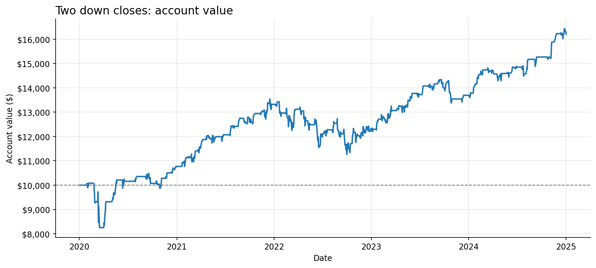

01 / SequenceSource-inspired interpretation
Two down closes
After two consecutive close-to-close declines, buy SPY at the next open. Hold five recorded sessions, then exit at the following open.
Net return+62.03%
Final equity$16,203
Max drawdown−18.08%
